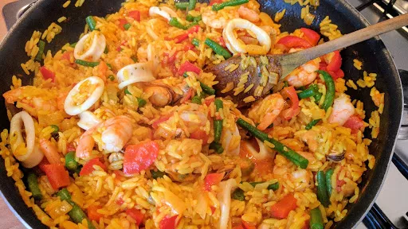

Quick seafood paella
30 mins
Serves 4

Ingredients
- 1 tbsp olive oil
- 1 onion, finely chopped
- 1 red pepper, deseeded and sliced
- 2 cloves garlic, finely chopped
- 230 g can chopped tomatoes
- 1 tsp ground turmeric
- 300 g long grain rice
- 1⅓ l vegetable stock
- 450 g bag frozen mixed seafood, thawed
- 175 g green beans, halved
- handful chopped flat-leaf parsley leaves
- 1 lemon, cut into wedges
Instructions
- Heat the
oil1 tbsp
in a large frying pan and cook the onion1
and pepper1
for 5 minutes, until softened but not brown. Stir in the garlic2 cloves
, tomatoes230 g can
and turmeric1 tsp
, and cook for 1 minute more, stirring occasionally.
- Tip in the
rice300 g
and cook for 1 minute, stirring to coat the grains. Pour in the stock1⅓ l
, stir well and bring to the boil, then simmer uncovered for about 8 minutes, stirring occasionally until the rice300 g
is almost cooked and most of the stock1⅓ l
has been absorbed.
- Add the
seafood450 g
and beans175 g
, and cook for 3-4 minutes more. Stir in the parsleyhandful
and season. Serve straight from the pan with lemon1
wedges.
-
kcal
463
-
fat
6 g
-
saturates
1 g
-
carbs
78 g
-
sugar
10 g
-
fibre
3 g
-
protein
32 g
-
salt
1.91 g
BBC Good Food: Low-fat Feasts
Short Link
Long Link